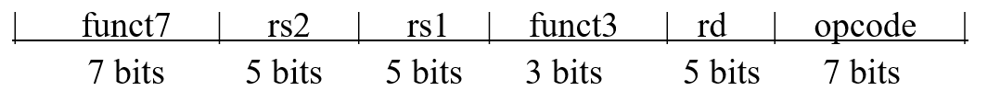
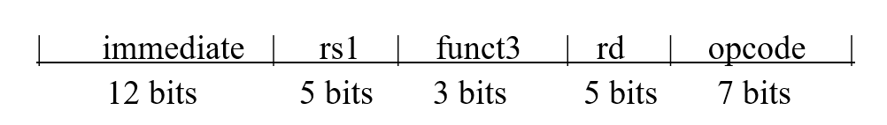
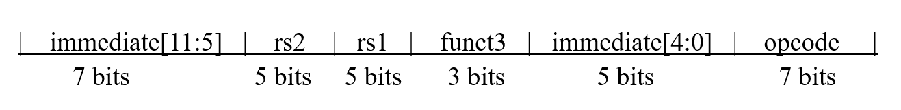
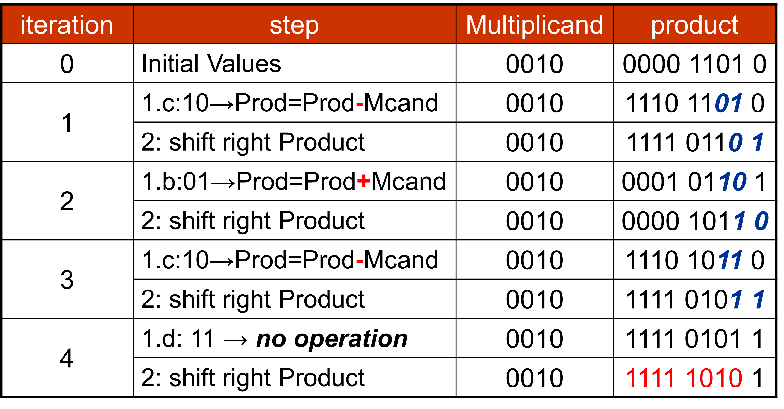
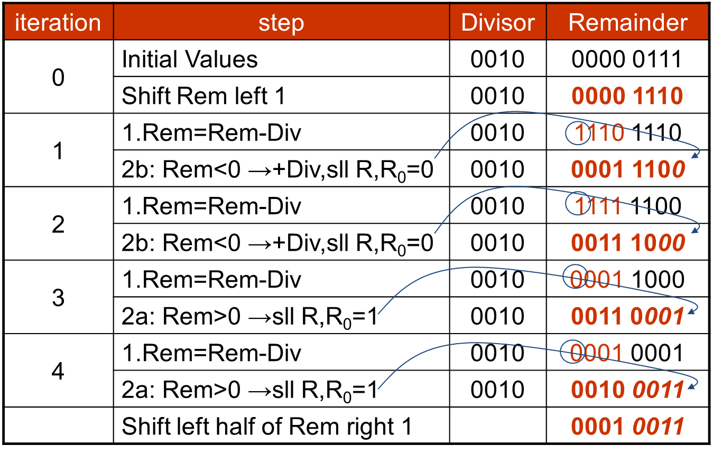
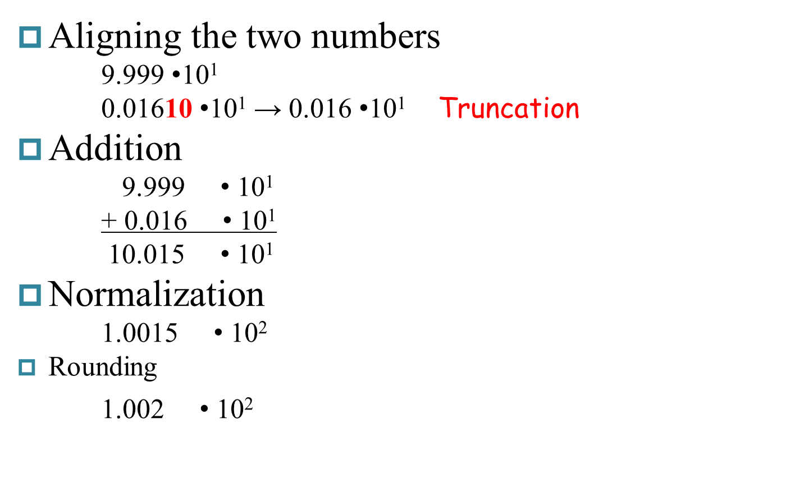
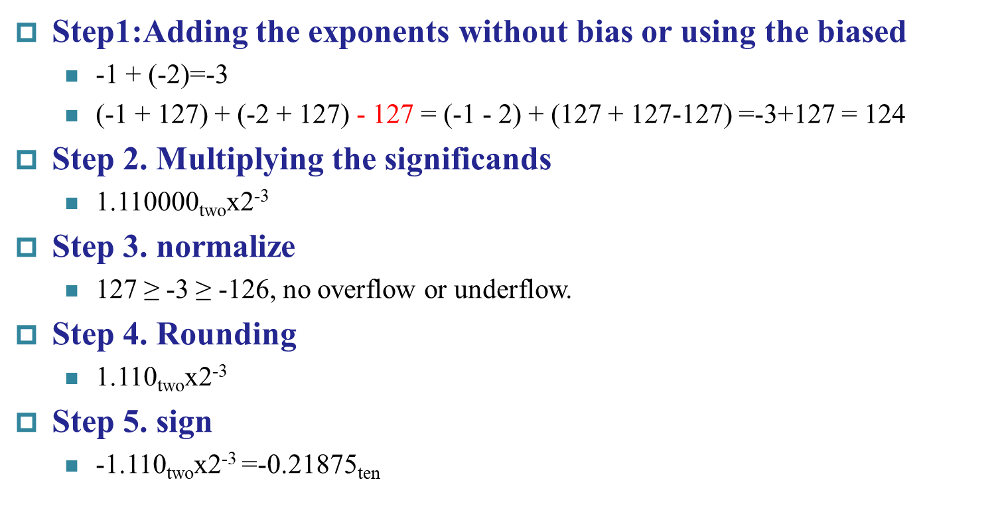

计算机组成
Chapter1 Computer Abstractions and Technology
CPU Time
Cycle Per Instruction (CPI)：单个周期指令数（平均时可为小数） CPU Clock Cycles：时钟周期数 Clock Cycle Time：每个时钟的时间 Clock Rate：时钟周期 Instruction Count (IC)：指令数 $$ \begin{aligned} CPU~Time&=CPU~Clock~Cycles\times Clock~Cycle~Time\\ &=\frac{CPU~CLock~Cycles}{Clock~Rate}\\ &=Instruction~Count\times CPI \times Clock~Cycle~Time\\ &=\frac{Instruction~Count\times CPI}{Clock Rate}&&&&&&&&&&&& \end{aligned} $$
$$ \begin{aligned} Average~CPI&=\frac{Clock~Cycles}{Instruction~Count}\\ &=\frac{\sum^n_{i=1}(CPI_i\times Instruction~Count_i)}{Instruction~Count}&&&&&&&&&&&&&&&&
\end{aligned} $$
MIPS: Millions of Instructions Per Second
Chapter2 Instructions: Language of the Computer
RISC-V assembly language
Arithmetic
| Instruction | Example | Meaning | Comments |
|---|---|---|---|
| add | add x5,x6,x7 | x5 = x6 + x7 | Add two source register operands |
| subtract | sub x5,x6,x7 | x5 = x6 - x7 | First source register subtracts second one |
| add immediate | addi x5,x6,20 | x5 = x6 + 20 | Used to add constants |
Data transfer
| Instruction | Example | Meaning | Comments |
|---|---|---|---|
| load doubleword | ld x5, 40(x6) | x5 = Memory[x6 + 40] | doubleword from memory to register |
| store doubleword | sd x5, 40(x6) | Memory[x6 + 40] = x5 | doubleword from register to memory |
| load word | lw x5, 40(x6) | x5 = Memory[x6 + 40] | word from memory to register |
| load word, unsigned | lwu x5, 40(x6) | x5 = Memory[x6 + 40] | Unsigned word from memory to register |
| store word | sw x5, 40(x6) | Memory[x6 + 40] = x5 | word from register to memory |
| load halfword | lh x5, 40(x6) | x5 = Memory[x6 + 40] | Halfword from memory to register |
| load halfword, unsigned | lhu x5, 40(x6) | x5 = Memory[x6 + 40] | Unsigned halfword from memory to register |
| store halfword | sh x5, 40(x6) | Memory[x6 + 40] = x5 | halfword from register to memory |
| load byte | lb x5, 40(x6) | x5 = Memory[x6 + 40] | byte from memory to register |
| load byte, unsigned | lbu x5, 40(x6) | x5 = Memory[x6 + 40] | Unsigned byte from memory to register |
| store byte | sb x5, 40(x6) | Memory[x6 + 40] = x5 | byte from register to memory |
| load reserved | lr.d x5, (x6) | x5 = Memory[x6] | Load; 1st half of atomic swap |
| store conditional | sc.d x7, x5, (x6) | Memory[x6] = x5; x7 = 0/1 | Store; 2nd half of atomic swap |
| Load upper immediate | lui x5, 0x12345 | x5 = 0x12345000 | Loads 20-bits constant shifted left 12 bits |
Logical
| Instruction | Example | Meaning | Comments |
|---|---|---|---|
| and | and x5, x6, 3 | x5 = x6 & 3 | Arithmetic shift right by register |
| inclusive or | or x5, x6, x7 | x5 = x6 | x7 | Bit-by-bit OR |
| exclusive or | xor x5, x6, x7 | x5 = x6 ^ x7 | Bit-by-bit XOR |
| and immediate | andi x5, x6, 20 | x5 = x6 & 20 | Bit-by-bit AND reg. with constant |
| inclusive or immediate | ori x5, x6, 20 | x5 = x6 | 20 | Bit-by-bit OR reg. with constant |
| exclusive or immediate | xori x5, x6, 20 | x5 = x6 ^ 20 | Bit-by-bit XOR reg. with constant |
Shift
| Instruction | Example | Meaning | Comments |
|---|---|---|---|
| shift left logical | sll x5, x6, x7 | x5 = x6 << x7 | Shift left by register |
| shift right logical | srl x5, x6, x7 | x5 = x6 >> x7 | Shift right by register |
| shift right arithmetic | sra x5, x6, x7 | x5 = x6 >> x7 | Arithmetic shift right by register |
| shift left logical immediate | slli x5, x6, 3 | x5 = x6 << 3 | Shift left by immediate |
| shift right logical immediate | srli x5, x6, 3 | x5 = x6 >> 3 | Shift right by immediate |
| shift right arithmetic immediate | srai x5, x6, 3 | x5 = x6 >> 3 | Arithmetic shift right by immediate |
[!NOTE]
sra（算数右移）：右移，最高位补符号位
srl（逻辑右移）：右移，最高位补0
Conditional branch
| Instruction | Example | Meaning | Comments |
|---|---|---|---|
| branch if equal | beq x5, x6, 100 | if(x5 == x6) go to PC+100 | PC-relative branch if registers equal |
| branch if not equal | bne x5, x6, 100 | if(x5 != x6) go to PC+100 | PC-relative branch if registers not equal |
| branch if less than | blt x5, x6, 100 | if(x5 < x6) go to PC+100 | PC-relative branch if registers less |
| branch if greater or equal | bge x5, x6, 100 | if(x5 >= x6) go to PC+100 | PC-relative branch if registers greater or equal |
| branch if less, unsigned | bltu x5, x6, 100 | if(x5 < x6) go to PC+100 | PC-relative branch if registers less, unsigned |
| branch if greater or equal, unsigned | bgeu x5, x6, 100 | if(x5 >= x6) go to PC+100 | PC-relative branch if registers greater or equal, unsigned |
Unconditional branch
| Instruction | Example | Meaning | Comments |
|---|---|---|---|
| jump and link | jal x1, 100 | x1=PC+4 ; go to PC + 100 | PC-relative procedure call |
| jump and link register | jalr x1, 100(x5) | x1=PC+4 ; go to x5 + 100 | procedure return; indirect call |
\(\blacktriangledown\) Register Operands
32 registers in RISC-V（越少越快，寄存器个数一般不超过32个）
64 bits (doubleword) for each register in RISC-V
\(\blacktriangledown\) RISC-V register conventions（约定）
| Name | Register name | Usage | Preserved On call? |
|---|---|---|---|
| x0 | 0 | The constant value 0 | n.a. |
| x1(ra) | 1 | Return address(link register) | yes |
| x2(sp) | 2 | Stack pointer | yes |
| x3(gp) | 3 | Global pointer | yes |
| x4(tp) | 4 | Thread pointer | yes |
| x5-x7 | 5-7 | Temporaries | no |
| x8-x9 | 8-9 | Saved | yes |
| x10-x17 | 10-17 | Arguments/results | no |
| x18-x27 | 18-27 | Saved | yes |
| x28-x31 | 28-31 | Temporaries | no |
\(\blacktriangledown\) RISC-V 指令格式
R-format

I-format

S-format

Chapter3 Arithmetic for Computer
数字格式
| Sign Magnitude | One's Complement（反码） | Two's Complement（补码） |
|---|---|---|
| 000 = +0 | 000 = +0 | 000 = +0 |
| 001 = +1 | 001 = +1 | 001 = +1 |
| 010 = +2 | 010 = +2 | 010 = +2 |
| 011 = +3 | 011 = +3 | 011 = +3 |
| 100 = -0 | 100 = -3 | 100 = -4 |
| 101 = -1 | 101 = -2 | 101 = -3 |
| 110 = -2 | 110 = -1 | 110 = -2 |
| 111 = -3 | 111 = -0 | 111 = -1 |
Two's Biased notation（偏码）: $$ \begin{aligned} &通常：[X]_b＝ 2^n＋Ｘ\\ &IEEE~754: [X]_b＝ 2^n-1＋Ｘ&&&&&&&&&&&&&&&&&&&&&&&&&&\ \end{aligned} $$
Integer
Adder
Carry Lookahead Adder (CLA)

Multiplier
Booth's Algorithm
操作:最后一位补0 $$ \begin{aligned} 1~0:~&左半部分减乘数，右移结果\ 1~1:~&右移结果\ 0~1:~&左半部分加乘数，右移结果\ 0~0:~&右移结果&&&&&&&&&&&&&&&&&&&&&&&&&&\ \end{aligned} $$ Example $$ \begin{aligned} &2\times (-3)=-6\ &0010\times 1101=1111~1010&&&&&&&&&&&&&&&&&&&&&&&&&&&&\ \end{aligned} $$ 
Division
Example: 7 / 2

符号数相除：转出同符号相除，最后添加符号
除以0：overflow
Floating Point
IEEE标准
$$ X=(-1)^S+(1+Fraction)\times2^{(Exponent-Bias)}~~~~~~~~~~~~~~~~~~~~~~~~~~~~~~~~~~~~~~~~~~~~~~~~~~~~~~~~~~~~~~~~~~~~~~~~~~~~~~~ $$ S：符号位（0正1负）
Exponent:指数部分
single:8bits Bias=127
double:11bits Bias=1023
Fraction: 小数部分
范围
Denormal Numbers
Infinity
NANs
Addition
Example: \(9.999\times10^1 + 1.610 \times 10^{-1}\) 
[!NOTE]
大数吃小数 $$ \begin{aligned} &计算\frac{1}{1}+\frac{1}{2}+\frac{1}{3}+……+\frac{1}{n},\ &for(i=n;i>=1;i--)~~精度大于~~for(i=1;u<=n;i++)&&&&&&&&&&& \end{aligned} $$
Multiplication
Example: \(0.5_{ten}\times-0.4375_{ten}~\Rightarrow~1.000_{two}\times2^{-1}\times-1.110_{two}\times2^{-2}\)
